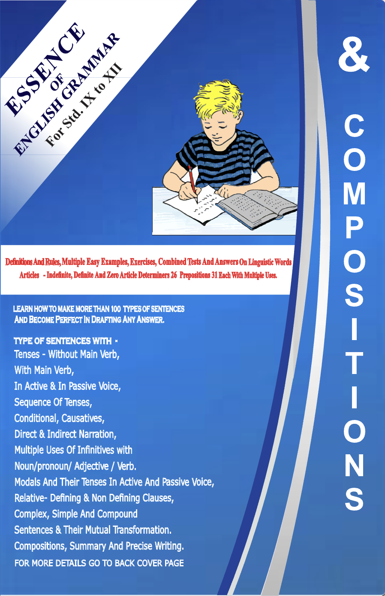

ESSENCE OF ENGLISH GRAMMAR FOR Std. IXth to XIIth
Definitions And Rules, Multiple Easy Examples, Exercises, Combined Tests And Answers On Linguistic Words Articles - Indefinite, Definite And Zero Article Determiners 26 Prepositions 31 Each With Multiple Uses.
LEARN HOW TO MAKE MORE THAN 100 TYPES OF SENTENCES AND BECOME PERFECT IN DRAFTING ANY ANSWER.
TYPE OF SENTENCES WITH:
- Tenses - Without Main Verb,
- With Main Verb,
- In Active & In Passive Voice,
- Sequence Of Tenses,
- Conditional, Causatives,
- Direct & Indirect Narration,
- Multiple Uses Of Infinitives with Noun/pronoun/ Adjective / Verb.
- Modals And Their Tenses In Active And Passive Voice,
- Relative- Defining & Non-Defining Clauses,
- Complex, Simple And Compound Sentences & Their Mutual Transformation.
- Compositions, Summary And Precise Writing.
Learn how to draft In easy & impressive way
- 1. Applications on general topics, CV, Resume, with model answers, exercises with guidance.
- 2. Letters
- a. Personal letters to relatives & friends on general routine matters.
- b. Informal and formal invitation letters, letters of apology, sorrow, condolence.
- c. Formal letters- of request, complaint, enquire, order and expression of regret and response letter on new subjects, on useful subject matters of daily life.
- 3. Precis Writing- with model examples, guidance for exercises.
- 4. Essay writing- for secondary, senior secondary, and competition level with guidance for exercise.
- 5. Report, advertisement, notice and poster drafting.
- 6. Comprehension exercises- on unseen passages with glossary.
- 7. Story writing.